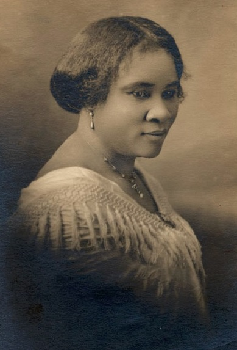

Madam C.J. Walker

Madam C.J. Walker foi uma empreendedora visionária e pioneira na indústria de produtos capilares para pessoas negras. Superando adversidades, ela construiu um império de beleza e tornou-se a primeira mulher negra milionária nos Estados Unidos. Sua empresa, **Madam C.J. Walker Manufacturing Company**, não apenas revolucionou o mercado de cosméticos, mas também criou oportunidades de emprego para milhares de mulheres negras.
Principais Contribuições
- Criou uma linha de produtos capilares especialmente desenvolvidos para mulheres negras.
- Fundou a **Madam C.J. Walker Manufacturing Company**, empregando milhares de mulheres negras.
- Defendeu o empoderamento econômico das mulheres afro-americanas, incentivando o empreendedorismo.
- Investiu em causas sociais e educacionais, apoiando instituições negras e campanhas de direitos civis.
- Foi a primeira mulher negra a se tornar milionária nos Estados Unidos.
Saiba mais
Voltar